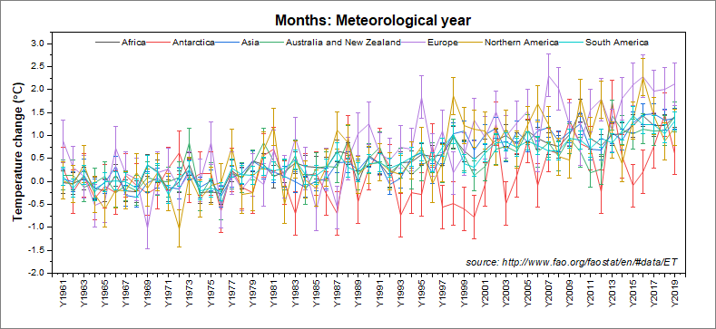
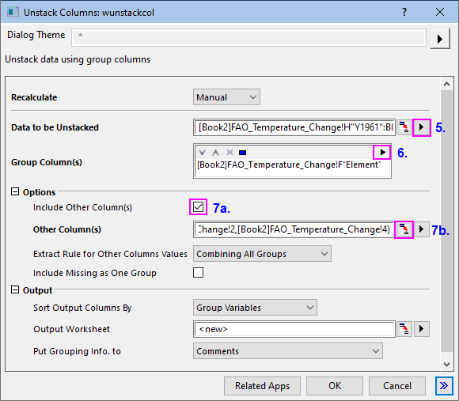
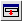
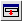
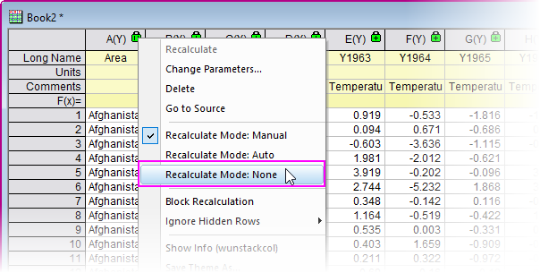
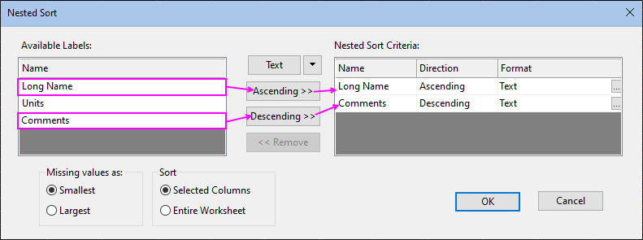
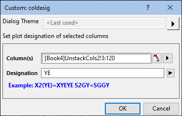
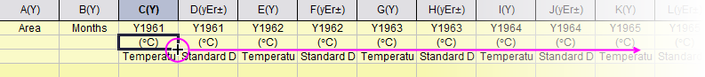
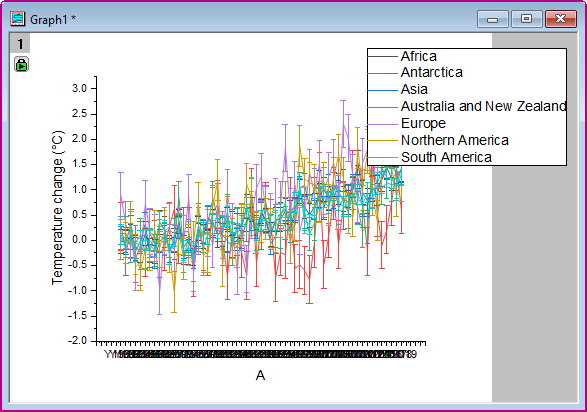
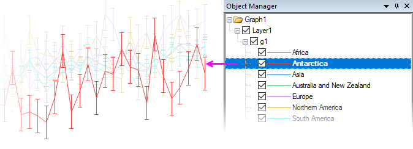

Arbeitsblattspalten nach Beschriftung entstapeln und sortieren
Unstack-Sort-Columns-by-Label
Zusammenfassung
Wenn Sie mit einem Datensatz arbeiten -- insbesondere einem, der nicht mit einer bestimmten Analyse oder Zeichenoperation im Hinterkopf erzeugt wurde --, werden Sie häufig mit der Notwendigkeit konfrontiert, die Daten erstmal "bereinigen" zu müssen (z. B. neu ordnen, reduzieren etc.), bevor Sie sinnvoll etwas mit ihnen anfangen können. Dies kann eine besondere Herausforderung darstellen, wenn der Datensatz sehr groß ist und sich die Operationen "Ausschneiden und Einfügen" zum Neuordnen der Daten sich als unpraktisch erweisen. Sogar eine CSV-Datei mit ihrer einfachen Anordnung Zeile x Spalte erfordert vor der Analyse und grafischen Darstellung häufig noch ein paar Eingriffe.
- 
In diesem Tutorial stellen wir eine Verbindung zu einem sehr großen UN-FAO-Datensatz der globalen Temperaturdaten für die Jahre 1961 - 2019 her, führen einige Operationen zum Neuordnen der Daten durch, wenden dann Datenfilter auf zwei kategoriale Datenspalten an, bevor wir das Ergebnis als eine interaktive zeilenweise Linienkurvenschar mit Fehlerbalken zeichnen.
Origin-Version mind. erforderlich: Origin 2021
Was Sie lernen werden
- Wie Sie eine Verbindung zu einer Datenquelle im Web herstellen
- Wie Sie ein Arbeitsblatt basierend auf den Kategorien in einer der Spalten "entstapeln"
- Wie Sie die entstapelten Spalten nach Spaltenbeschriftung sortieren
- Wie Sie Filter für mehrere Spalten setzen, um einen großen Datensatz zu organisieren und Trends in den Daten anzuzeigen
- Wie Sie ein zeilenweises Diagramm für die gefilterten Daten zeichnen
- Wie Sie einen dynamischen Diagrammtitel erstellen, der eine Substitution von Spaltenmetadaten verwendet, um Ihr Diagramm zu beschriften
Schritte
- Klicken Sie bei aktiver Arbeitsmappe auf Daten: Mit Web verbinden. Kopieren Sie im Dialog Mit Web verbinden Folgendes in das URL-Feld und klicken Sie dann auf OK:
- http://shared.originlab.com/techdownload/FAO_Temperature_Change.csv
- Übernehmen Sie die Einstellungen der CSV-Importoptionen und klicken Sie auf OK, um die Webdaten mit dem Origin-Arbeitsblatt zu verbinden.
- Ändern Sie die Größe der Arbeitsmappe, so dass Sie eine gute Ansicht von Ihren Datenspalten erhalten, und beachten Sie ein paar Dinge:
- die zweite Spalte, beschriftet mit Area, ist eine sich wiederholende Liste der geografischen Regionen und wirtschaftlichen Gruppierungen.
- die vierte Spalte, beschriftet mit Months, ist eine sich wiederholende Liste der Zeiträume (Monate, Quartale, Jahre).
- die sechste Spalte, beschriftet mit Element, enthält die Kategorien Temperature change und Standard Deviation.
- die Spalten, die mit Y1961 bis Y2019 beschriftet sind, enthalten sowohl Messungen für Temperature change und Standard Deviation für die Jahre 1961 - 2019.
- Auch wenn es potentiell viele Möglichkeiten gibt, diese Daten zu bearbeiten und zu zeichnen, legt die horizontale Anordnung der Daten, plus der Einbindung einer Fehlermessung (Standardabweichung) eine zeilenweise Zeichnung mit fehlerbalken nahe. Wir müssen unsere Daten jedoch neu ordnen, um sie in eine zeichenbare Form zu bringen.
- Wir beginnen mit der Notwendigkeit, die Daten von Temperature change und Standard Deviation nach Jahr in separate Spalten zu unterteilen (d. h., wir möchten eine Sequenz von Messungen > StdAbw. Messung > StdAbw., gruppiert nach Jahr). Dafür verwenden wir das Hilfsmittel Spalten entstapeln. Klicken Sie auf Restrukturieren: Spalten entstapeln und öffnen Sie den Dialog.
- Die Temperaturdaten befinden sich in den Spalten Y1961 - Y2019. Klicken Sie daher auf die ausklappbare Pfeilschaltfläche rechts von Zu entstapelnde Daten und wählen Sie Spalten auswählen. Scrollen Sie im Dialog Spaltenbrowser weiter, bis Sie LName = Y1961 erreichen. Halten Sie dann die Tasten Strg + Shift gedrückt und drücken Sie die Taste Ende auf Ihrer Tastatur. Dies wählt alle Spalten der Temperaturspalten aus. Klicken Sie auf die Schaltfläche Als ein Block hinzufügen und klicken Sie auf OK, um den Browser zu schließen.
- Klicken Sie auf die Ausklappschaltfläche Gruppenspalten und wählen Sie F(Y): Element.
- 
- Aktivieren Sie (a) unter Optionen das Kontrollkästchen Andere Spalte(n) einschließen und klicken Sie dann (b) auf die Schaltfläche "Aus Arbeitsblatt auswählen"
 rechts vom Textfeld. Wenn der Dialog minimiert wird, halten Sie die Strg-Taste gedrückt und markieren die Arbeitsblattspalten B(Y) und D(Y), indem Sie auf die Spaltenköpfe klicken. Klicken Sie auf die Schaltfläche , um den Dialog wiederherzustellen. Übernehmen Sie die verbleibenden Dialogstandardeinstellungen und klicken Sie auf OK, um Ihre Ausgabe zu schließen und zu erzeugen.
rechts vom Textfeld. Wenn der Dialog minimiert wird, halten Sie die Strg-Taste gedrückt und markieren die Arbeitsblattspalten B(Y) und D(Y), indem Sie auf die Spaltenköpfe klicken. Klicken Sie auf die Schaltfläche , um den Dialog wiederherzustellen. Übernehmen Sie die verbleibenden Dialogstandardeinstellungen und klicken Sie auf OK, um Ihre Ausgabe zu schließen und zu erzeugen.
- Klicken Sie auf den hinzugefügten Reiter UnstackCols1 und beachten Sie, dass wir jetzt eine saubere Trennung zwischen den Messungen für Temperature change (Temperaturänderung) und Standard Deviation (Standardabweichung) haben. Wir müssen die Spalten jedoch nach Jahr neu ordnen, so dass die Temperaturänderung jeden Jahres von seiner Standardabweichung gefolgt wird. Wir können die Spalten in diesem Blatt wegen der "Operationsschlösser" nicht neu ordnen, deshalb fahren wir fort, indem wir eine Kopie des Blatts erstellen und dann die Operationen aus dem kopierten Blatt entfernen (unsere ursprüngliche Ausgabe bleibt hierbei unangetastet).
- Klicken Sie mit der rechten Maustaste auf den Reiter UnstackCols1 und wählen Sie Duplizieren. Klicken Sie auf dem hinzugefügten Blatt UnstackCols2 auf das grüne Schloss in der oberen linken Ecke und wählen Sie Modus Neuberechnen: Kein. Klicken Sie in der Warnmeldung auf OK.
- 
- Jetzt da die geschützten Operationen aus dem Ausgabeblatt entfernt sind, können wir die Spalten nach Beschriftung sortieren. Klicken Sie auf den Reiter UnstackCols2 und ziehen Sie das Blatt heraus, um eine separate Mappe zu erstellen. Klicken Sie auf den Spaltenkopf von C(Y) (Y1961), um die Spalte zu markieren und drücken Sie Strg + Shift + Ende, um alle verbleibenden Spalten auszuwählen. Klicken Sie auf Worksheet: Spalten nach Beschriftung sortieren und legen Sie Folgendes fest:
- 
- Klicken Sie auf OK, um die Spalten neu zu ordnen, so dass auf die Messung der Temperaturänderung jeden Jahres die jeweilige Messung der Standardabweichung folgt. Klicken Sie jetzt mit der rechten Maustaste auf die noch ausgewählten Daten und wählen Sie Setzen als: Benutzerdefiniert .... Geben Sie YE im Feld Zuordnung und klicken Sie dann auf OK. Auf diese Weise werden die ausgewählten Spalten in die Reihenfolge Y, yEr gebracht und das Arbeitsblatt für das Zeichnen vorbereitet.
- 
- Ein kleines Detail: Scrollen Sie im Arbeitsblatt, so dass Sie die Spalte C (Langname = Y1961) sehen können, und klicken Sie doppelt in die Zelle Einheiten. Geben Sie eine linke Klammer ein und wählen Sie Abbildung Symbole. Durchsuchen Sie die Symbolabbildungen nach einem Symbol für "Grad" (F0B0), klicken Sie auf Einfügen und schließen Sie den Dialog. Geben Sie ein großes "C" und eine schließende Klammer ein. Bewegen Sie dann die Maus über die untere rechte Ecke der Telle, bis Sie den Cursor mit einem "+" sehen und klicken Sie doppelt, um das (C) bis ans Ende des Blatts zu erweitern.
- 
Datenfilter zu kategorialen Spalten hinzufügen
Zu diesem Zeitpunkt haben wir einen sehr großen Datensatz und der Versuch, alle Daten in unserem Arbeitsblatt zu zeichnen, würde das zeilenweise Diagramm, das wir erstellen möchten, überfordern. Um die Trends in den Daten besser zu sehen und Vergleiche anzustellen, fügen wir Datenfilter zu den Spalten Area und Months hinzu.
- Klicken Sie auf den Spaltenkopf Area, um die Spalte zu markieren, und wählen Sie dann Spalte: Filter: Filter hinzufügen/entfernen. Es wird ein Filtersymbol zur Spaltenüberschrift hinzugefügt. Klicken Sie auf ein Spaltenfiltersymbol und deaktivieren Sie das Kontrollkästchen Alle auswählen. Aktivieren Sie dann die Kästchen neben Africa, Antarctica, Asia, Australia & New Zealand, Europe, Northern America und South America und klicken Sie auf OK.
- Klicken Sie auf den Spaltenkopf Months, um die Spalte zu markieren, und wählen Sie dann Spalte: Filter: Filter hinzufügen/entfernen. Klicken Sie auf das Symbol des Spaltenfilters und deaktivieren Sie das Kontrollkästchen Alle auswählen und entfernen Sie damit alle Häkchen. Aktivieren Sie dann das Kontrollkästchen neben Meteorological year und klicken Sie auf OK.
- Markieren Sie die Spalte Area, klicken Sie mit der rechten Maustaste und wählen Sie Setzen als: Als X setzen. Drücken Sie die Strg-Taste und markieren Sie Spalte C. Drücken Sie dann die Tasten Shift + Ende, um die verbleibenden Spalten im Arbeitsblatt auszuwählen.
- Klicken Sie auf Zeichnen > Einfache 2D: Zeilenweise .... Klicken Sie auf die Ausklappschaltfläche neben der Y-Beschriftung im Feld und wählen Sie A(X): Area und unter X-Daten in die Option Spaltenbeschriftung. Klicken Sie dann auf OK.
- Wenn das Diagramm erstellt ist (das kann einen Moment dauern), wählen Sie Format: Seite. Klicken Sie auf die Registerkarte Legenden/Titel rechts und setzen Sie den Übersetzungsmodus von %(1),�%(2) auf @LA: Long Name.
- 
Diagramm beschriften, Erscheinungsbild optimieren
- Klicken Sie doppelt auf die beengten Hilfsstrichsbeschriftungen der horizontalen Achse. Setzen Sie auf der Unterregisterkarte Beschriftung der Hilfsstriche > Format die Option Drehen (Grad) = Auto und aktivieren Sie das Kontrollkästchen Sich überschneidende Beschriftung automatisch verbergen.
- Klicken Sie auf die Registerkarte Skalierung und setzen Sie Von auf 0, Bis auf 60, Neu skalieren auf Festgelegt und Kleine Hilfsstriche auf Anzahl = 0. Klicken Sie auf OK, um den Dialog zu schließen.
- Klicken Sie mit der rechten Maustaste in den oberen, mittigen Bereich des Diagrammfensters, wählen Sie Text hinzufügen und geben Sie im Textobjekt den folgenden Text ein:
- Months:%([Book2]Unstackcols2,@WL,B[F],W)
- Klicken Sie mit der rechten Maustaste auf das Beschriftungsobjekt und wählen Sie Eigenschaften. Klicken Sie auf die Registerkarte Programmierung, setzen Sie die Option Verknüpfung zu (%,$), Substitutionsebene auf 1 und klicken Sie auf OK. Die Beschriftung lautet jetzt "Months: Meteorological year", was die Filterbedingung darstellt, die für die Spalte Months definiert ist. (Dies ist ein Beispiel für eine Textsubstitution von Arbeitsblattinformationen. Weitere Informationen finden Sie unter Substitution der Textbeschriftung.
- Um das Seitenverhältnis des Diagramms zu ändern und die Dimensionen des Diagramms nach Bedarf anzupassen, wählen Sie Format: Seite und setzen auf der Registerkarte Allgemeines den Ansichtstyp = Fenster-Ansicht. Klicken Sie auf OK, um den Dialog Details Zeichnung zu schließen.
- Drücken Sie die Strg-Taste und ziehen Sie die Diagrammlegende in horizontaler Richtung, um die Legende auf einer Zeile darzustellen.
- Wählen Sie am Ende Ansicht: Zeigen und setzen Sie neben Rahmen ein Häkchen. Ein Rahmen wird zum Diagrammlayer hinzugefügt. Positionieren Sie Seitentitel und Legende nach Bedarf.
 | Durch Klicken auf eine der Zeichnungen in der Objektverwaltung blenden Sie alle anderen ab und erhalten damit eine bessere Sicht auf den Trend in einer einzelnen Zeichnung.
- 
|